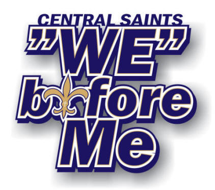

About Central Saints
Building champions in football, cheer, and life for over 30 years in Stanislaus County.
Our story
Who we are
Central Saints Youth Football and Cheer was founded in 1993 by Ron Brace (TVYFL President 1990–95). We exist as a feeder program to Central Catholic High School and serve families across Modesto and Stanislaus County.
Our purpose is to promote and administer youth football and cheer activities for the sole benefit of our members. We inspire youth — regardless of race, creed, or national origin — to practice the ideals of sportsmanship, scholastic improvement, and physical fitness.
We provide a supervised, organized, and safety-oriented environment while keeping the welfare of participants free of adult ambition and personal glory. We do not hold tryouts. Every child gets to play.

Core values
What we stand for
Teamwork
We win and grow together. The "WE" model is at the heart of everything we do.
Scholastics
Excellence on and off the field. Academic achievement matters as much as athletic skill.
Fitness
Building healthy habits and physical discipline that serve young athletes for life.
Inclusion
No tryouts — every child is welcome and developed, regardless of experience level.
Reach out
Contact us
Central Saints Youth Football & Cheer
Modesto, CA 95351